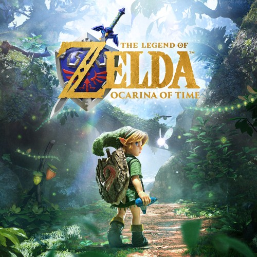

The Legend of Zelda: Ocarina of Time (y Ocarina of Time 3D)
Ocarina of Time es uno de los juegos de aventura más conocidos de Nintendo, donde controlas a Link viajando entre el presente y el futuro para detener a Ganondorf.
Su versión Ocarina of Time 3D renovó los gráficos, mejoró los controles y añadió opciones como el modo Master Quest.
